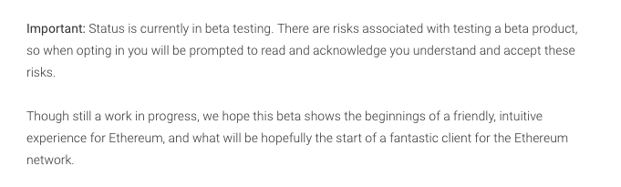

5. Designing Through Blockchain
The particular technical characteristics of blockchain technology, namely, decentralisation and auditability, have now entered the collective imagination and are changing the ways in which certain problems are approached. Some projects that were previously technically feasible but had not been applied have now been implemented thanks to an increasing awareness of the possibilities. We call this movement 'designing through blockchain'.
This chapter explores this phenomenon by analysing the evolution of blockchain technology and the way in which it has developed into its own economic sector. We explore two fields that have undergone major conceptual and formal upheaval as a result of being viewed through the prism of blockchain: regulatory techniques and identity recognition.
5.1. The emergence of a new sector
The development of blockchain has not been homogeneous. Two separate movements can be distinguished: projects that directly target the general public and mass markets and uses of blockchain aimed at the business sector.
Since 2017, blockchain technology has developed into a significant social phenomenon. Bitcoin in particular has been extensively discussed in the media. A large number of people have begun buying cryptocurrencies on trading platforms. In absolute terms, the amounts are dizzying, with market cap levels now exceeding US$ 100 billion (Figure 10). Beyond these initially impressive figures, it is still difficult to measure the true scope of the technology.

Figure 10. Total market capitalisation according to coinmarketcap.com.
Most of the funds raised by ICOs have been directed towards technical projects. Some of these have focused on technical improvements, others on entirely new blockchain systems. Some have promised to provide specific applications for end users, not just new tools for developers. According to the goals they have set for themselves, many of these projects are due to start delivering services soon. These future services can be expected to be made available for use by the public, albeit primarily as beta versions.
We can observe both economic models and a methodology based on a culture of 'perpetual prototyping', key features of the start-up culture of the information technology industry. In this sense projects have evaded responsibility for future technical issues as well as for defining the real value of the end use of their product. The language of prototypes and betas has its own marketing value in appealing to early adopters (the first users of a service). It also serves to protect companies in legal terms and to guard against disappointment from end users (Figure 50).

Figure 11. Warning message for the Status mobile app on Android PlayStore.
There is in fact a good deal of uncertainty surrounding the actual value and usefulness of these new services. While blockchain can be seen as an important social phenomenon, its use remains marginal. The few major exceptions are Bitcoin and a few other cryptocurrencies used for speculative purposes.
The latter are also used to store and transfer web-based assets. In countries in which significant, if perhaps temporary, capital control measures have been implemented, their use may increase significantly. Examples might be observed within the capital flow restrictions imposed in Venezuela in 2019 and in Greece in 2015. The same is true for countries experiencing high rates of inflation. When a country's financial infrastructure is experiencing difficulties, blockchain-based cryptocurrencies begin to find uses in the real economy.
Another possible use lies in humanitarian aid, such as when aid struggles to reach its destination due to corruption or is severely diminished by overheads and administrative costs charged by intermediaries. Blockchain technology provides a much more direct system, one that also allows transactions to be tracked. Its use is already being explored by organisations including the United Nations, World Economic Forum (WEF), UN Refugee Agency (UNHCR), World Food Programme (WFP), International Committee of the Red Cross (ICRC), and IBM. In 2017, the WFP launched a pilot project called Building Blocks, which began by assessing key assumptions around the capacity of blockchains to authenticate, record, and reconcile cash and food aid transactions in Pakistan. By 2018, the WFP reported that Building Blocks was able to facilitate money transfers while protecting beneficiary data, controlling financial risk and reducing costs by eliminating up to 98% of the fees charged by third-party institutions. The project is expected to speed up the implementation of emergency assistance operations.
These new opportunities are beginning to raise questions about monetary policy and sovereignty. The Open Money Initiative, an independent initiative funded by a number of blockchain players along with the Human Rights Foundation, examines how people use money in the context of closed economies and collapsing monetary systems, for instance in Venezuela (Figure 51).
Figure 12. Tweet from the Open Money Initiative showing a woman hiding money in her hair.
Some institutional actors with strong user bases, such as Facebook and Telegram, are creating their own cryptocurrencies for integration into their platforms. The marketing campaign for the Facebook consortium's cryptocurrency project Libra states that it will be aimed at people who do not have access to traditional financial services (the 'unbanked') and countries whose national currencies are weak. Libra will likely be pegged to the US dollar and made available as a payment tool on popular messaging applications such as Facebook, WhatsApp, and Messenger as well as the Instagram photo-sharing application. The Telegram app is also launching a cryptocurrency. The situation is similar to that of a highly financed market: Many promises have been made, but there are currently few deliverables available.
A wide range of actors, including companies and institutions, have attempted to take advantage of these new opportunities. The business sector has its own specific approach to blockchain. Solutions that were developed by and for private companies are primarily intended to improve existing processes and mostly involve permissioned blockchains. These types of blockchains can be distinguished according to their modes of governance, which can be centralised or by consortium.
In centrally controlled blockchains, each member must be approved by the central body, and transactions can only be validated by the central body. The database is shared between a number of different actors, but only the central body can regulate it. The use of blockchain in these cases does not constitute a major divergence from the use of existing technologies, but it does enable companies to familiarise themselves with the new technology. We do not focus further on this type of usage.
The situation is different where blockchains are governed by consortiums. In this case, each member owns and controls a node and can validate transactions. The structure imitates that of a public blockchain, but with a restricted number of selected members. This profoundly changes the ways in which cooperation is approached.
The consortium approach avoids responsibility being placed on a central actor. Conventional information exchange procedures without third parties often require data to be verified and reconciled by each participant, meaning the data structure must be standardised. When discrepancies are discovered, a tedious bureaucratic process is triggered, one which can sometimes end up in the courts.
In consortium blockchains, the blockchain modifies the relationship between actors by placing a distributed ledger system in the middle. The collaboration process is designed around this centralised element. The structure of the information recorded in the blockchain, as well as the validation rules, are therefore the primary focus of discussions. For example, organisations may decide that at least 70% of the nodes, not just a simple majority, must validate a block for it to be accepted.
This enables new situations to come about. One concrete example involved the declaration of bicycle thefts in Amsterdam: A common ledger for the owners, the insurance companies and the police was established using a blockchain to enable the various parties to manage their tasks in the event of a theft such as complaint filing, registration of the complaint, and insurance payout. The government could also have set up a centralised database and invited the other parties to use it, but this was not done before blockchains could be used to create ledgers of this type. Blockchain has brought many actors to the table and focused them on the modelling of transactions, processes, actors and objects.
Established IT industry players like IBM, Google, and Microsoft provided the infrastructure required to deploy these services. New actors like we.trade and sana.swiss modelled particular situations in attempts to provide turnkey services to companies, saving them from having to do the modelling and development work themselves. Thus, we are seeing the emergence of an industry that is changing the way companies approach relationships and information sharing with their partners.
5.2. New regulation techniques
Blockchain is prompting a re-assessment of responsibilities related to regulation. Here, we address the issue of responsibility from the point of view of service providers and regulatory institutions.
The ability to access content, whether in transit or in storage, carries with it a certain amount of responsibility. Encryption systems have already partially removed this burden in certain situations: Access providers are no longer aware of the content of TLS-protected web pages; chat services with 'end-to-end encryption' have no access to the content of the messages sent over their networks.
Where intermediaries are no longer able to read content, they no longer have to bear responsibility for that content. The end user of the service becomes the sole responsible party.
In the same way, a blockchain can be used to provide monetary services without having the capacity to discover the nature of each transaction. A dual phenomenon can therefore be observed: Users are lobbying for the protection of their privacy, while IT service providers are reluctant to take on the role of service regulator.
Censorship capabilities bring with them significant levels of responsibility, and there are costs associated with managing censorship rules and legislation. Reputational and political costs are associated with the use of platforms for some types of material, such as political or pornographic material. Third parties managing transactions are in direct competition with other systems that manage the same types of transactions without taking responsibility for them. In this context it might be advantageous for these third parties to reduce content regulation.
The United States has been considering abandoning the last few controls it exercises over domain names. This issue has been on the table since the 1990s. In 2012, China, India and Russia came together to demand equal rights in the regulation of the internet. Global pressure has increased in recent years, in particular following the Snowden affair. ICANN, the regulatory authority in charge of domain names, is itself demanding independence from the US government. The United States has recognised ICANN as an effective and mature multipartite organisation and has tasked it with bringing the global community together to address the process of transitioning to a global consensus mechanism. In this context, ICANN published a report in which it explores decentralised systems, possibly based on blockchain technology, using Bitcoin and Namecoin as examples.
New actors are also taking on new responsibilities. So-called oracle services, such as Chainlink and Provable, incorporate external data, including traditional financial information such as interest rates and prices, into blockchains. This means that commercial transactions implemented through smart contracts and executed on blockchains can have access to external data. These services allow for bidirectional operation: Information on blockchains is already available externally; through oracles, external data are now also available on a blockchain. The reliability of an oracle and the quality of the data it provides are therefore crucial factors.
Regulatory Technology (RegTech) is the fintech field that uses information technology to help businesses comply with regulatory requirements. The number of technical solutions available have multiplied rapidly, particularly following the financial crisis of 2008. The certification capabilities of blockchain systems are now enabling this industry to offer new services.
5.3. Identity paradigms
The concept of a person's identity can be understood as the principle of recognition, both by the person themselves and by others. Each individual is given a name at birth. Names, in conjunction with nationality, sex, and place and date of birth, constitute the basic elements of recognising a legal identity of each person.
Governments have established systems for proving one's legal identity, including passports and requirements for handwritten signatures. Most are now designing modern digital identification systems, such as ID that can be presented to prove one's identity on the internet, in similar ways.
Internet services, however, including blockchain-related services, are transforming the ways in which we conceive of a person's identity in a transaction. The identity of an individual is rarely verified. Most transactions dispense with a full legal identity check and only verify certain attributes, such as age, email address, or payment method. Identity management is gradually shifting towards the verification the attributes of individuals. There is a gradual shift from who someone is to what they are.
Accessing a public blockchain does not require specific identification procedures. Everyone is free to create a new account in order to receive and manage funds. Each account is associated with a key which is used to authenticate users and enables them to operate on the blockchain according to the established set of rules. Each operation, whether it is sending funds or adding a smart contract, is digitally signed by this account. This creates a chain of transactions related to a particular account.
Unlike traditional financial services, which demand that users provide formal identity documents before accessing the service, the members of a blockchain can use its services without authorisation from a third party. This is fairly common on the internet, where the creation of user accounts rarely requires strong identification. Most internet services have terms and conditions that must be accepted, and email addresses and phone numbers may also be requested to enable the person to be identified after the event, if necessary. Terms and conditions do not need to be accepted to use a public blockchain. Their technical configurations actually limit the actions available.
People's identities emerge through their actions. A person's activity on a merchant site like eBay or Airbnb can be established through their transaction history. Identities can be established on blockchains in the same way, through recognition.
A person can perform actions using multiple accounts on a number of different blockchains. The transactions performed through each account will be separate, but the different accounts can be unified under a single identity through the addition of a message recognising the person's activity on another system. The keybase.io service has already unified its users' identities using this principle by associating their social media identities with encryption keys. The person controlling the account digitally signs a message on each platform, proving that they are the same person.
This means that once someone has legally identified themselves on a blockchain, all transactions on this blockchain are legally identified. It also potentially enables them to legally prove their identity on other blockchains and other systems.

Figure 13. In each blockchain you write a message that identifies your key in the other blockchain. This proves you have access to both keys.
This distinction between an identity used on a network and an administrative identity endowed by a body external to the individual is extremely pertinent to discussions of the recognition bestowed on an individual and what that individual is authorised to do.
The shift towards the decentralised administration of identity makes this still more relevant. Identity can now be expressed in ways that are very different from its conventional legal expression. The most common digital identifiers used today are email addresses and usernames, such as Facebook and Twitter IDs. They place identification providers in a position of control over each of a person's digital transactions. Various proposals have been put forward in an attempt to change this situation, including the concept of self-sovereign identity. This administration technique gives individuals and organisations exclusive ownership of their digital and analogue identities as well as control over how their personal data are shared and used. Zero-knowledge proofs are also used to demonstrate the veracity of information without it being shared. For example, we can rent a car because we have the legal capacity to do so in terms of age and possession of the appropriate licence and insurance, but we simply attest to this capacity, without furnishing its details. This approach necessarily implies a change in the relationship between personal data and the identities associated with it. It generally questions the rights, recognition, responsibilities, and status of the individual in the public informational space.